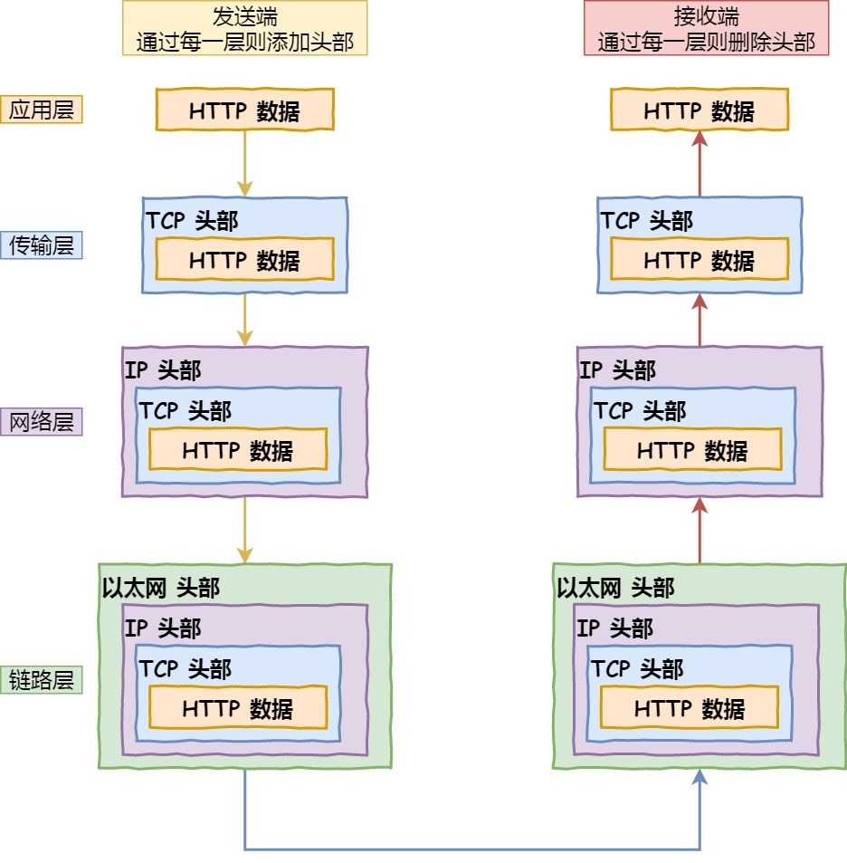
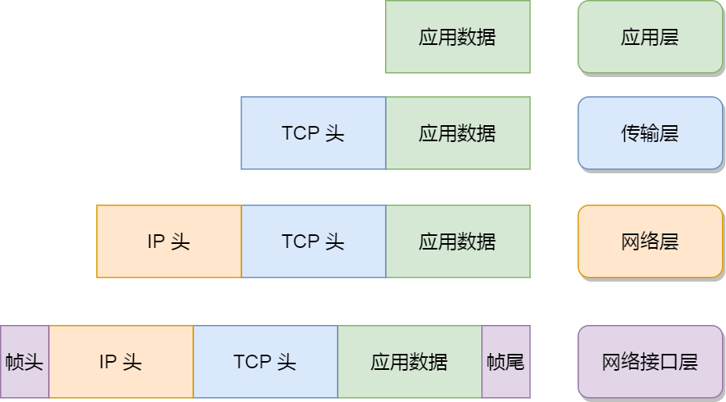

摘要：计算机网络属于计算机基础，包括四/七层模型，网络层 IP 协议，传输层 TCP/UDP、三次握手、四次挥手，应用层 HTTP/HTTPS、请求报文和响应报文、状态码、HTTP 缓存机制，Session等。
用浏览器访问网页的过程（重点是DNS 解析）将所有知识串联到一起。
[TOC]
b/s 比特每秒。


为什么分层：
CRC（Cyclic Redundancy Check）循环冗余检验：为了保证数据传输的可靠性，广泛使用的一种检错技术。
常见协议：
IP 协议：控制网络包收发。ICMP 控制报文协议：用于告知网络包传送过程中产生的错误及各种控制信息。OPSF 路由选择协议：用于 IP 数据包（在路由器间）的路由选择。ARP 地址解析协议：路由器与服务器通信时，用于物理地址寻址，负责将 IP 地址转换为 MAC 物理地址。每台主机中都有一张 ARP 缓存表，记录主机的 IP 地址和 MAC 地址间的对应关系；
MAC 地址的） ARP 包返回给广播的主机；MAC 地址写入 ARP 缓存表；以路由下一跳的地址填充目的 MAC 地址，以数据帧形式转发；RARP 逆地址解析协议：逆向从 IP 地址反查域名。地址：
MAC：只负责某一区间（主机、路由器、主机）的通信传输；IP 地址：负责将数据包发给最终目的地地址；分类号 + 网络号 + 主机号。
TCP 传输控制协议：提供面向连接的、可靠的数据传输服务；只能点对点通信。
UDP 用户数据报协议：提供无连接的数据传输服务，不保证可靠性；支持点对点、多播和广播。

目的：保证客户端和服务端（浏览器和服务器）建立可靠的通信信道。主要作用是为了确认双方的接收和发送能力是否正常、指定自己的初始化序列号、为后面的可靠性传送做准备。
实质上就是连接服务器指定的端口，建立 TCP 连接，并同步客户端和服务端的序列号和确认号，交换 TCP 窗口大小信息。
报文标志位 确认号 序列号
B-to-S: SYN ( seq = x )
S-to-B: SYN + ACK ( ACK = x+1, seq = y )
B-to-S: ACK ( ACK = y+1, [seq = x+1] )
刚开始客户端处于 Closed 的状态，服务端处于 Listen 状态。Socket 编程中，客户端执行 connect() 时，将触发三次握手。
Socket：从传输层上抽象出的一个抽象层，本质是接口。
SYN 报文/数据包，请求建立连接，初始序列号 seq 设置为 x。
SYN_SENT 状态，等待服务端确认。SYN + ACK 报文，请求确认连接，确认号 ACK 设为 （第一次握手时，客户端发送过来的）序列号 x + 1，服务端初始化序列号 seq 设为 y。其中 ACK 报文用来应答，SYN 报文用来同步。
SYN_RECV 状态。ACK 报文，确认号 ACK 设为 序列号 y + 1，确认连接。
ESTABLISHED 状态，双方建立连接。ACK 报文段可携带数据（序列号 seq 设置为 x + 1），不携带则不消耗序列号。两次握手不可以：两次握手只能保证客户端可正常给服务端发送数据，只有经过第三次握手，双方才能确认自己与对方的发送与接收是正常的。
若只有两次握手：已失效的连接请求报文突然又传送到了服务端，从而产生错误。
标志位 确认号 序列号
B-to-S: ACK ( ACK = y+1, seq = x+1 )
S-to-B: ACK ( ACK = x+2 )
报文标志位 确认号 序列号
B-to-S: FIN ( seq = x )
S-to-B: ACK ( ACK = x+1 )
S-to-B: FIN ( seq = y )
B-to-S: ACK ( ACK = y+1 )
当 TCP 连接超过一定时间或不再使用时（数据传送完毕、传输完一个网页的全部资源、收到全部内容后），触发四次挥手。
FIN 连接释放报文段，表示请求报文发送完了，准备关闭 TCP 连接，并停止发送数据。
FIN_WAIT1（终止等待1）状态，等待服务端确认。FIN 后，向客户端发送 ACK 报文：ACK 确认号设置为（第一次挥手时）客户端发送过来的序列号 x + 1，表示已收到客户端的关闭连接请求。
CLOSE_WAIT 半关闭状态，即客户端已没有要发送的数据，但服务端若发送数据，则客户端仍要接收；FIN_WAIT2（终止等待2）状态，等待服务端发出的连接释放报文段。FIN 连接释放报文，指定一个序列号 y。告诉客户端响应报文发送完了，同意关闭请求。
LAST_ACK （最后确认）状态，等待客户端的确认。FIN 连接释放报文段后，发送 ACK 确认作为应答，将 ACK 确认号设置为收到的服务端序列号 y + 1；告诉服务器响应报文接受完了。
TIME_WAIT 状态。ACK 报文后，关闭连接，进入 CLOSED 状态；CLOSED 状态。挥手为什么需要四次？
四次由 TCP 的半关闭（half-close）造成的。即，TCP 提供了一种能力，连接的一端在结束发送后、还能接收来自另一端的数据。第二次挥手后。
关闭连接时，当服务端收到 FIN 报文时，可能响应报文并没有发送完，并不会立即关闭 SOCKET 连接，所以只能先回复一个 ACK 报文，告诉客户端收到了发的 FIN 报文。只有等到服务端所有的报文都发送完了，才发送 FIN 报文，故需四次挥手。
在不可靠服务的基础上实现可靠的信息传输。
运行于 TCP 协议上的：
HTTP 超文本传输协议：用于浏览器与服务器间的通信（传输数据）。基于 TCP 协议，先（3 次握手）建立 TCP 连接，再发送 HTTP 请求。功能包括：事务处理、缓存控制、标记媒体类型等。代理服务器常用端口号：80/8080/3128/8081/9098。
HTTPS 服务器，默认端口号为 443/TCP,UDP。Tomcat，默认端口号为8080。Redis 默认端口号为 6379。MySQL 默认端口号为 3306/TCP,UDP。Elasticsearch 默认端口号为 9200/9300，Kibana 默认端口为 5601。MongoDB 默认端口号为 27017 。FTP 文件传输协议：基于 TCP 实现可靠传输，好处是可屏蔽操作系统和文件存储方式。代理服务器常用端口号：21。Telnet 远程登录协议：缺点是所有数据以明文发送；代理服务器常用端口号：23。SSH 安全网络传输协议：是目前较可靠、专为远程登录会话和其他网络服务提供安全性的协议。解决了 Telnet 不安全的问题，可有效防止远程管理过程中的信息泄露问题。默认的端口号为22。SMTP 邮件发送协议；POP3/IMAP 邮件接收协议：默认端口号为110。SOCKS 代理协议常用端口号：1080。运行于 UDP 协议上的 ：
DNS 域名解析协议；DHCP 动态主机配置协议：用于内部网（路由器？）或网络服务供应商自动分配 IP 地址给用户。其它：
15672.HTTP/1.0 默认用短连接；HTTP/1.1 默认长连接（成功建立后保持连接不关闭），开启 Keep-Alive，请求头设置 ``Connection: Keep-Alive 。HTTP/1.1新加入大量状态码，如 100、206、409、410 等。HTTP/1.0 中主要用请求 header 中的 If-Modified-Since/Expires 作为缓存判断标准；HTTP/1.1 引入了更多的缓存控制策略，如 Entity tag，If-Unmodified-Since, If-Match/If-None-Match 等。HTTP 缓存机制HTTP/1.0 传送整个对象，浪费带宽；HTTP/1.1 在请求头引入了 range 头域，允许只请求资源的某个部分（返回码 206），充分利用带宽，还支持断点续传。HTTP/1.1 在请求头中新增 Host 字段。略
都是 TCP 作为底层协议。
HTTP 默认是 80，HTTPS 默认是 443。HTTP 传输内容是明文，客户端和服务器端都无法验证对方的身份。HTTPS 运行在 SSL/TLS 之上，传输内容经过对称加密，密钥用服务器的证书进行非对称加密。安全性高，但耗费更多资源。https 加密的过程
对称加密：加密和解密用同一个密钥，最大的问题是如何安全地将密钥发给对方；
非对称加密：用一对公钥和私钥。发送方用对方的公钥加密，对方用自己的私钥解密。
客户端请求消息 HttpServletRequest

请求行（request line）：
GET /search?lan=zh-CN&name=tom HTTP/1.1
HTTP/1.0：GET 、POST、HEAD 方法；HTTP/1.1：PUT、DELETE、CONNECT、OPTIONS、TRACE 方法。GET 方法的请求参数；HTTP/1.0、HTTP/1.1、HTTPS。HttpServletRequest 服务端用于读取请求报文头的 API。
Accept: 客户端可识别的内容类型列表，为一个或多个 MIME 类型的值；告诉服务端，客户端接受什么类型的响应；
application/jsontext/plain, image/jpegUser-Agent: （产生请求的）浏览器类型，兼容性及定制化需求；Host: localhost:8088 请求的主机名，允许多个域名同处一个IP地址，即虚拟主机；Content-Type:
application/json;charset=UTF-8text/plainapplication/x-www-form-urlencodedmultipart/form-data; boundary=WebAppBoundary Content-Length 与请求体相关；Connection: Keep-Alive 即持久连接，一个连接可发多个请求；Keep-Alive: timeout=60Cache-Control: no-cache 缓存策略no-cache 表示用对比缓存来验证缓存数据；Cookie: JSESSIONID=xxxTransfer-Encoding: chunked 分块；Authorization: Basic user passwd：鉴权方法；POST 方法中使用，可包含多个请求参数。适用于需客户填写表单的场合，存放表单的键值对。GET 当客户端点击网页上的链接、在浏览器的地址栏输入网址、要从服务器中读取文档时。GET 要求服务器将 URL 定位的资源放在响应报文的数据部分，回送给客户端。HEAD 类似 GET，只不过服务端接收到 HEAD 请求后只返回响应头，而不会发送响应内容，适合只需查看某个页面的状态时。GET 一般不含请求体，请求参数（以地址的形式）通过 URL 传递，有长度、大小限制，只接受 ASCII 字符；POST 将请求参数（以 key-value 的形式）封装在请求体中，没有限制，可传输大量数据。GET 的参数所有人可见，不安全，不适合传送私密数据、敏感信息。GET 请求参数会被完整保留在浏览器历史记录里，URL 地址可被收藏，而 POST 中的参数不会被保留。GET 请求在浏览器回退时是无害的，而 POST 会再次提交请求。GET 请求只能进行 URL 编码，而 POST 支持多种编码方式。GET 请求发送一个 TCP 数据包； POST 发送两个。
GET 请求，浏览器会把 http header 和 data 一起发送出去，服务器响应 200（返回数据）；POST ，浏览器先发送 header，服务器响应 100 continue，浏览器再发送 data，服务器响应 200 ok（返回数据）。GET 会被浏览器主动 cache，而 POST 不会，除非手动设置。服务端响应消息

Content-Type：application/json。Cache-Control: max-age=3600 服务端告诉客户端如何控制响应内容的缓存。缓存3600秒。Location: https://github.com 让客户端再发一个请求到重定向的 URL，状态码为 303。Set-Cookie: UserID=Jack; Max-Age=3600; Version=1 服务端可设置客户端的 Cookie。服务端发生错误时，返回给前端的响应信息必须包含 HTTP 状态码、errorCode、 errorMessage、用户提示信息四部分。涉及对象分别是浏览器、前端开发、错误排查人员、用户。
状态码：
1XX：表示接收到请求，正在处理。2XX：表示请求正常处理完毕。
200 (OK：请求成功，表明该请求被成功完成，所请求的资源已发送到客户端。一般用于 GET 或 POST；202：接受和处理、但处理未完成203：返回信息不确定或不完整204：请求收到，但返回信息为空205：服务器完成了请求，用户代理必须复位当前已经浏览过的文件206 (Partial Content)：范围请求。3XX：重定向，需附加操作以完成请求；让客户端再发起一个请求以完成整个处理。
301：永久重定向，表示旧地址的资源已被永久移除（不可访问了）；302：临时重定向，表示旧地址的资源还在（仍可访问），只是临时跳转到新地址，搜索引擎会抓取新地址的内容而保存旧网址；SEO 302 好于 301；303 (See Other)：重定向到其它页面，目标 URL 在响应报文头的 Location 属性；304 (Not Modified)：资源（自上次取得后）并未修改，直接用本地的缓存。4XX：客户端错误。
400 (Bad Request)：客户端请求有语法错误，不能被服务器所理解；401 (Unauthorized)：请求未经授权，必须和 WWW-Authenticate 头域一起使用；常见于用户未登录的情况；403 (Forbidden)：服务器拒绝请求，禁止访问资源。常见于机密信息或复制其它登录用户链接访问服务器的情况；404 (NotFound)：服务器无法取得所请求的网页，请求资源不存在。如输入错误的URL；409 (Conflict)：请求与当前资源的规定冲突；410 (Gone)：资源已被永久转移，且没有任何已知的转发地址。5XX：服务器端错误。
500 (Internal Server Error)：服务器发生不可预期的错误，通过服务端日志查看抛出的异常；501 (Internal Server Error)：内部服务器错误；503 (Server Unavailable)：服务器当前不能处理客户端的请求，一段时间后可能恢复正常；504：关口过载（路由出错？），服务器使用另一个关口或服务来响应用户，等待时间设定值较长505：服务器不支持或拒绝支请求头中指定的HTTP版本
HTTP性能优化
缓存是一种保存资源副本并在下次请求时直接使用该副本的技术，当 web 缓存发现请求的资源已被存储，会拦截请求，返回该资源的拷贝，而不会去资源服务器重新下载。
HTTP 缓存主要是通过请求和响应报文头（Expires、Cache-Control、Last-Modified、Etag 字段）来控制缓存策略。
缓存处理 :
HTTP/1.0 中主要用请求 header 中的 If-Modified-Since/Expires 作为缓存判断标准；HTTP/1.1 引入了更多的缓存控制策略，如 Entity tag, If-Unmodified-Since, If-Match/If-None-Match 等。优点：优秀的缓存策略可缩短网页请求资源的距离，减少延迟，节省网络流量；由于缓存文件可重复利用，降低网络负荷，提高客户端响应。
根据是否需重新向服务器发起请求分为两种：强制缓存和对比缓存。

响应 header 中两个字段来标明失效规则：
Expires：HTTP/1.0，服务端返回的缓存到期时间，即下一次请求时，请求时间小于此时间，则直接使用缓存数据。
HTTP/1.1，即：Cache-Control： HTTP/1.1，用于指定缓存规则；
max-age：用来设置资源可被缓存多长时间，缓存的内容将在 xxx 秒后失效，单位为秒；s-maxage：同 max-age，不过只针对代理服务器缓存；public：任何缓存区（客户端和代理服务器）都可缓存响应；private：只能被客户端，而不能被代理服务器缓存；no-cache：用对比缓存来验证缓存数据；no-store：禁止一切缓存（这才是响应资源不被缓存的意思）；所有内容都不缓存，强制缓存、对比缓存都不会触发。
每次请求都需让服务器验证缓存数据是否过期（缓存响应的有效性），从而决定浏览器是否可以使用缓存。
Etag 标识或 Last-Modified 最后修改时间）与数据一起返回给浏览器，返回状态码 200，浏览器将二者备份至缓存数据库中。If-None-Match 或 If-Modified-Since）发送给服务器进行判断，比较服务器资源的 Etag 是否与 If-None-Match 相同 、或 Last-Modified 是否小于（早于）等于 If-Modified-Since：
304 (Not Modified) 状态码，表示资源（自上次取得后）并未修改/未失效（缓存命中），浏览器可直接使用本地缓存；都是用来跟踪浏览器用户身份的会话方式。区别和联系：
Session：是服务器用来存储部分数据信息；
HttpSession。Cookie：是本地客户端用来存储少量数据信息的；
在一次客户端和服务器之间的会话中，客户端（浏览器）向服务器发送请求，
客户端和服务器间是通过http协议进行通信，但 http 协议是无状态的，不同次请求会话是没有任何关联的，优点是处理速度快。

创建时机：
session="false"表示什么意思：当前JSP页面禁用session隐含变量！但可以使用其他的显式的对象request.getSession([true]) 才会创建HttpSession对象。request.getSession(boolean create)：create为false，若没有和当前JSP页面关联的HttpSession对象，则返回null；request.getSession()等同于request.getSession(true)。销毁的时机：
invalidate()方法：使HttpSession失效。
Q1：URL 统一资源定位符：用于定位互联网上资源，俗称网址。提取域名。
<协议>://<域主机>.<Web 服务器域名>:<端口>/<资源路径地址>/<文件名>?
scheme://host.domain:port/path/filename?<参数>
scheme：因特网服务的类型。常见的协议有 http、https、ftp、file。host：域主机（http 的默认主机是 www）；domain：因特网/Web 服务器域名，主机地址，如 w3school.com.cn；port：主机上的端口号（http 的默认端口号是 80）；path：服务器上的资源路径地址（如果省略，则文档必须位于网站的根目录中）；filename：文档/资源名；DNS 域名解析（应用层？）：通过网址/域名查找服务器的 IP 地址，基于（网络层的）路由和 IP 寻址、（传输层的）UDP 协议；
域名 服务器外网IP地址 端口
baidu.com 220.114.23.56 80
Q2：浏览器查询DNS 解析缓存（域名和 IP 地址映射关系，有时间和大小双重限制），命中则直接返回，未命中（没有找到记录或记录已过期）；Q3：查询本地 HOSTS 文件（本机操作系统缓存）；Q4：浏览器向本地 DNS 服务器（正式）发送解析请求（递归查询）：
DHCP 动态主机设置协议自动分配 IP 地址；Q5：查询本地区域资源配置：如果域名在区域中（命中），则返回解析结果，有权威性；如果不在区域中，Q6：查询本地 DNS （解析结果）缓存：命中直接返回解析结果，没有权威性；
Q7），再由根域名服务器一级级（Q8 -> Q10 -> Q12）向下查询，最后将得到的查询结果逐级（A12 -> A10 -> A8 -> A7）返回给本地 DNS 服务器，再返回给浏览器。Q7：本地 DNS 服务器根据根提示，向根 DNS 服务器发起 DNS 解析请求；
Q8：根 DNS 服务器查询（负责管理目标域名的） .com 顶级域名对应的（DNS 服务器的）IP 地址，返回给本地 DNS 服务器；Q9：本地 DNS 服务器向 .com 顶级域名 DNS 服务器发起 DNS 解析请求；
Q10：.com 顶级域名 DNS 服务器查询（负责管理目标域名的） baidu.com 子域名对应的（DNS 服务器的）IP 地址，返回给本地 DNS 服务器；Q11、Q12：不断迭代（如二级域名），直到获得目标域名对应的 IP 地址，返回给本地 DNS 服务器；A11：将域名解析的结果（以域名和 IP 地址键值对的形式）写入本地 DNS 解析缓存表，并设置 TTL；Q13：浏览器根据 IP 地址生成 HTTP 请求，发送给服务器。如果配备了 DNS 负载均衡：一个域名可能对应多个 IP 地址；
DNS 缓存污染/投毒（DNS cache pollution/poisoning）：指一些刻意制造的域名服务器数据包， 把域名指往不正确的 IP 地址。是常见的黑客攻击手段，也是防火长城的主要手段之一。
（传输层）发起 TCP 请求：浏览器（选择一个大于1024的本机端口（8080？）向目标 IP 地址的 80 端口）发起 TCP 连接请求，经过三次握手建立 TCP 连接；Cookie 会随请求发送给服务器。
应用层：建立 TCP 连接后，浏览器生成 HTTP 请求报文（请求行、请求头、请求体），发给服务器；
应用层：HTTP 数据，+ （传输层）TCP 头部，+ （网络层）IP 头部，+ （数据链路层）以太网头部。
浏览器按照 HTTP 协议的格式组装数据，最终将数据按照 TCP/IP 协议的方式发送给服务器；
将请求转发到 Nginx 负载均衡（反向代理）服务器：将同一个应用部署在多台服务器上，将大量用户的请求分配给多台机器处理；
filters 链处理，当 TCP 连接超过一定时间或不再使用时（数据传送完毕、传输完一个网页的全部资源、收到全部内容后），四次挥手断开（与服务器间的） TCP 连接。

Content-Type 字段的值判断数据类型，如文字、图像、声音、视频等;
HTML 标签生成 DOM 树；CSS 代码生成 CSS 规则树；JavaScript 执行引擎执行 JS 代码；DOM 树和 CSS 规则树，生成渲染树；跨域：指不同域名间相互访问。浏览器不能执行其他网站的脚本，是由同源策略（对于 JavaScript 所定义的安全限制策略）造成的。
http 或 https；127.0.0.1；8080；以上三个条件任一条件不同就会产生跨域问题。
前端解决方案
后端解决方案
Access-Control-Allow-Origin；@CrossOrigin注解）；CorsFilter（适用于Spring MVC、Spring Boot）；参考：Java 解决跨域问题